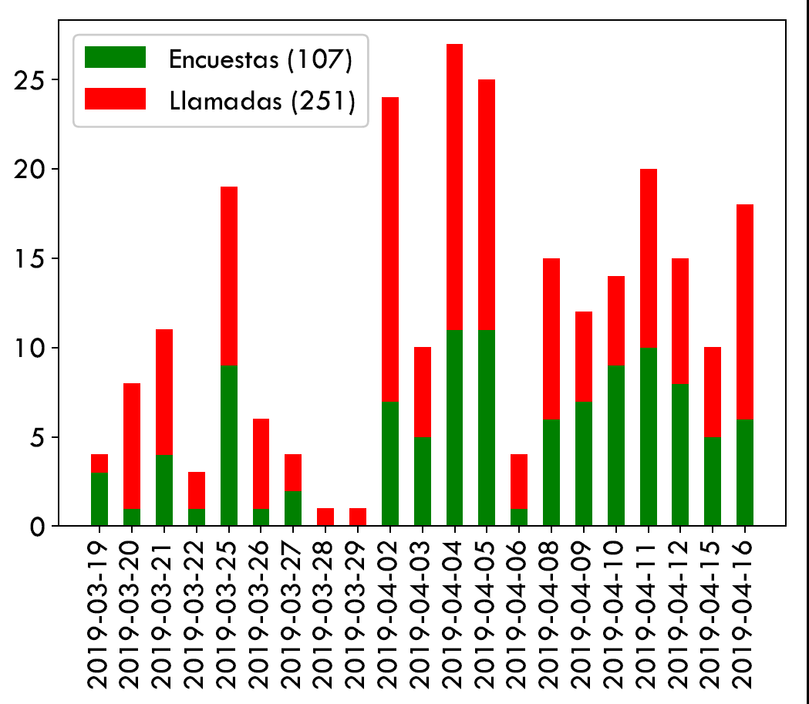
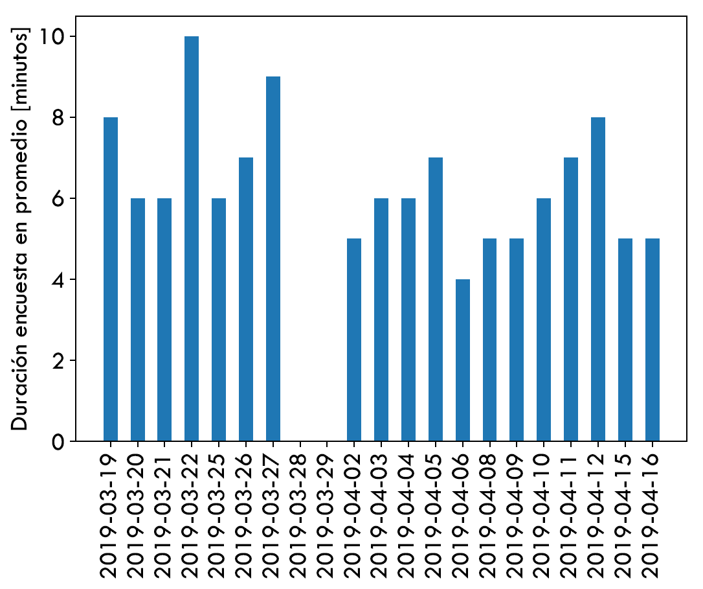
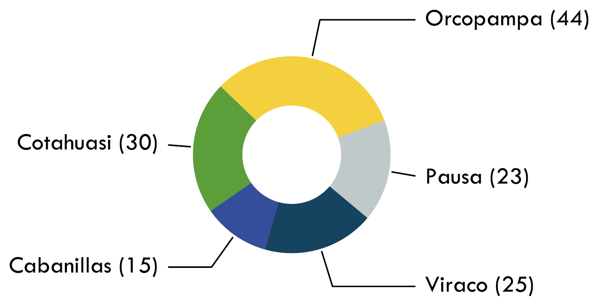
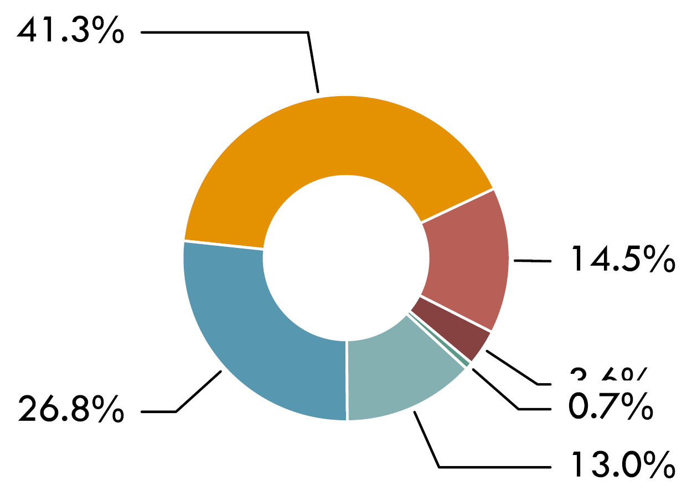
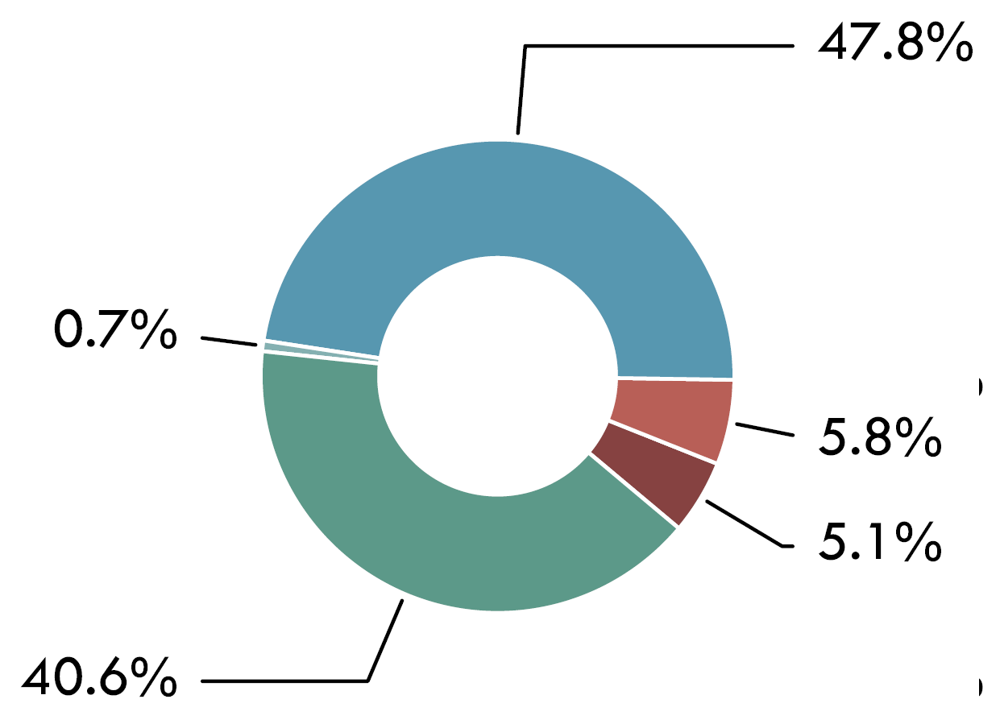

Contexto
El objetivo del presente proyecto es analizar el acceso a energía de una muestra de clientes de la institución de microfinanzas Fondesurco a través del uso de la herramienta HEDERA collect con el fin de extraer información relevante sobre el uso, costos asociados y atributos del acceso a electricidad y soluciones de cocina de clientes de Fondesurco en zonas rurales y remotas. Con este fin, por medio del uso de la aplicación de la herramienta de HEDERA se recogió una línea base del Objetivo de Desarrollo Sostenible 7, elaborando un primer diagnóstico del acceso a energía siguiendo los estándares de métricas internacionales, la metodología del “Enfoque Multinivel (Multi-Tier Framework (MTF))” desarrollado por el Banco Mundial y del Índice de Progreso fuera de la Pobreza Energética (Progress out of Energy Poverty Index (PEPI)) [N. Realpe, PhD Thesis 2017].
La herramienta HEDERA collect es una aplicación móvil diseñada para captar la información más
relevante sobre acceso a servicios básicos a nivel de hogar para medir y monitorear los Objetivos de Desarrollo Sostenible.
Metodología
Previo al levantamiento de datos todos los involucrados fueron informados y entrenados sobre el uso de las herramientas. Los Analistas recibieron un video GIF a sus teléfonos celulares con el procedimiento de uso del la herramienta HederaGPS y el Operador fue entrenado durante de una videollamada haciendo uso presencial de la herramienta HederaSDG7.
El levantamiento de información fue realizado en 2 etapas:
Durante la primera etapa se realizó una visita domiciliaria haciendo uso de la herramienta HederaGPS para el proceso de evaluación de crédito. A su vez, durante esta visita se hizo la entrega al cliente de un folleto con la información general del contenido de la encuesta. También se comunicó al cliente sobre la llamada de un "Operador" para realizar la encuesta digital.
Durante la segunda etapa se ha hecho uso de los datos recoletos durante la primera etapa. Estos datos se han puesto a disposición de área de IDI de Fondesurco (Flor Villena Sosa) para que el Operador identificara y contactara vía telefónica a los clientes que hayan realizado un desembolso. Durante la llamada telefónica el Operador utilizó la herramienta HederaSDG7. El tamaño de muestra correspondió al número de clientes que hayan realizado una operación de desembolso durante el proyecto.
Instalación de la Herramienta
La herramienta se compone de dos compontes independientes y complementarias.
HederaGPS, para la recolección y el procesamiento de los datos relacionados a la geolocalización y los números DNI de los entrevistados.
HederaSDG7 para el levantamiento de información de acceso a energía basado en la métrica del Banco Mundial Multi-Tier Framework (MTF) por medio de una encuesta digital.
Recolección de datos GPS (Analista)
Cuestionario de acceso a energía (Operador)
El Operador cumplía la función de contactar a los clientes que hubiesen realizado un desembolso. La manera de realizar el contacto fue por teléfono haciendo uso de la herramienta HederaSDG7 para registrar las preguntas. A su vez el Operador proporcionará retroalimentación respecto a mejoras y sugerencias frente al uso de la herramienta.
| number of survey per day + number of non answered per day | Time per interview (average per day) |
|  |  |
Resultados
Durante el proyecto hubo 229 desembolsos realizados en las agencias seleccionadas para el proyecto.
De este total corresponden:
130 personas que contestaron el celular y respondieron la encuesta. 19 personas que contestaron el celular y no respondieron la encuesta. 23 personas que no contestaron el celular (timbra, pero nadie contesta). 46 personas con las cuales no fue posible tener una conexión debido a tenían el celular apagado o aparentemente no tenían señal. A este grupo se le realizó llamadas en más de una ocasión tanto en la mañana como en la tarde.
11 números de teléfono que son incorrectos o el socio indicó que no era su celular y se mostró evasivo.
En el contexto anterior la muestra resultó ser de 130 personas (encuestas).
| Number of surveys per office | Index of Access to Electricity (World Bank) | Index of Access to Cooking Solutions (World Bank) |
|  |  |  |
Dificultades y soluciones
Durante el proyecto se presentaron los siguientes dificultados que fueron abordadas con las soluciones descritas a continuación:
Errores en el envío de datos utilizando HederaGPS Los Analistas fueron directamente asesorados por medio de WhatsApp para asegurar la calidad de los datos.
Errores en el envío de la geolocalización utilizando la herramienta HederaGPS Se preparó un video GIF para los Analistas mostrando el paso a paso para enviar la geolocalización para el envío de los datos vía WhatsApp.
Dificultades en la captura de la geolocalización con la aplicación WhatsApp Se preparó un video en YouTube explicando la forma correcta de enviar los datos vía WhatsApp en caso de no tener conexión a internet.
Los primeros registros de los datos utilizando la herramienta HederaSDG7 indicaban valores improbables de la duración de las encuestas vía telefónica Se realizaron ajustes en la programación de le herramienta para capturar el tiempo de las llamadas para lograr veracidad sobre los datos correspondientes a la duración de las encuestas
Durante las encuestas vía telefónica se identificaros preguntas que resultaban confusas para los clientes Se realizaron cambios al contenido de las encuestas y a programación de la estructura para mejorar el proceso de la encuesta.
Conclusión
Se implementó la herramienta Hedera Collect utilizando las herramientas HederaGPS y HederaSDG7 para el levantamiento de información de acceso a energía. El proyecto consistió en identificar y georreferenciar los datos recolectados con la herramienta, y en evaluar el uso de la herramienta para las actividades de recolección de datos tanto de acceso a electricidad como a soluciones de cocción. El proyecto se realizó a su vez con el propósito de generar información de mercado a Fondesurco y de proveer retroalimentación respecto a las herramientas, análisis y procesos a HEDERA.
El proyecto permitió realizar el procedimiento para obtener el desembolso de 229 clientes de los cuales 130 fueron registrados con la herramienta HederaSDG7.
El método de recolectar la geolocalización y el DNI, y de procesar los datos con le herramienta HederaGPS permitió asignarles el posicionamiento georreferenciado a los datos de los clientes entrevistados.
Fondesurco es una cooperativa de ahorros y de crédito de la ciudad de Arequipa, Perú. Con más de 26 oficinas en el sur de Perú, localizados en los departamentos: Arequipa, Moquegua, Puno, Ayacucho y Huancavelica, Fondesurco tiene una visión de cooperativa buscando consolidarse en las zonas rurales donde las posibilidades de acceso a crédito son escasas. Con una transformación reciente de ONG a Cooperativa, Fondesurco aumentó la oferta de servicios financieros incluyendo el ahorro. Como institución pionera en el país en el desarrollo de productos de crédito de microfinanzas verdes en el marco de su Programa de Soluciones de Energía Renovable (SER), su objetivo es ofrecer un mejor acceso a las energías limpias a la población rural de bajos recursos en sus zonas de cobertura.
HEDERA es una Startup basada en Berlín que tiene por objetivo revolucionar la forma en que el impacto se mide, monitorea y reporta. HEDERA ofrece la plataforma para compartir y escalar actividades de inversión sostenible & monitorear de manera costo-eficiente, descentralizada y centrada en el cliente el impacto con respecto a los alcances de los ODS. A través de sus herramientas móviles, HEDERA empodera a las instituciones a recoger información a bajo costo y visualizarla analizada y siguiendo los estándares internacionales de medición de impacto. Además, a través de su red, HEDERA permite la conexión de actores en el sector de inversión de impacto de una manera eficiente y económica.
MTF Index for Electricity Supply
sunrise.tier_plots(HH,['E_Index'])
MTF Index for Access to Modern Cooking
Summary of Power Sources and Cooking Solutions
sunrise.tier_plots(HH,'C_Index')
Summary of power sources and cooking fuels
odk.plot_stacked_summary(collections,'es')